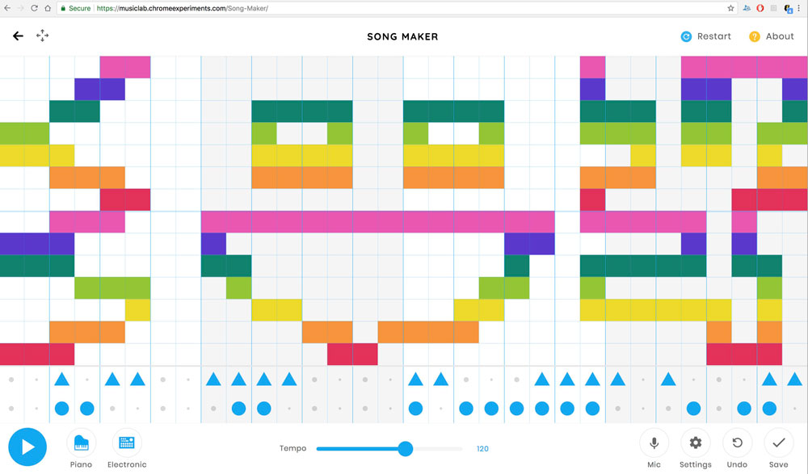

Week 1: GENERATIVE Music
When I heard the term "Generative" Music, the first thing that came to my mind was the Song Maker by Chrome Music Lab. Song Maker allows its users to "draw" melody on a grid of 32 x 14 and provides 2 lines of 32 beats for percussion. You can also choose different instruments to play the melody & beats that users have drawn / created
Patatap and Typatone by Jono Brandel and Lullatone work similar to the Song Maker, in which they also ask for user input and generate music by matching the users' input with the associated sample sound or frequencies of oscillators. In the case of Patatap and Typatone, they use keyboard input as a source of data / input, whereas Song Maker uses locations of mouse click to detect which of the cells / boxes on the grid the user has clicked on.
Patatap is different from Song Maker and Typatone in the way that Patatap doesn't save the user's input to do a playback of the music / melody that they have created. I am less inclined to say that Patatap is a "music" generator, but rather, a sound (and visual) reactor. The level of interactivity and generation is lower than the other two examples above, because it is more like pressing buttons on a sound board rather than one that generates repetiton of sound mechanically / automatically to create more "music"-like sound. In this way, Patatap is more like an instrument playable by a user via the computer keyboard, rather than a music generator.
Jazz Computer by Yotam Mann and Sara Rothberg is also an interesting example that is "generating" music. Or rather, it generates a version of a remix of a song written by Yotam Mann. The website uses the y scroll amount of the user to decide what "section" of the song it is playing as well as to determine the speed of the playback.

First week's of class of Generative Music has made me question my previously held concept of what can be classified as generative music. The works listed above seem to have less "generative" qualities than what I thought was possible to create listenable music. The discussions during class has also aspired me to create work with more generative qualities. This drove me to research whether there are examples of generative music that didn't require input from users to generate music.
MACCHINA by 5013 is an example of randomly generated music. The documentation by 5013 on the work suggests that there were a lot of curation involved to allow the music to be randomly generated. To me, this seemed somewhat similar to Terry Riley's In C, as it has a set of patterns / chords that the algorithm chooses from.

I also wanted to see if there are physical devices that generate music. The first thought that I had when thinking about this is whether there were people that had turned Rube Goldberg machines into musical devices to generate music. I found this particular video below on Youtube.
There were not a lot of information that I could find about the workings behind the content of the video. I also have doubt whether this is a physically built device (the low quality of graphics of the video makes me think that this could also be computer generated visual). However, if something like in the video above was to exist, it would be a music generating device that generates different music every time it is activated / run, based on random physical chances.
I also searched for generative music created with large set of data. Most of the examples that I found online that create music with large data sets seemed to have a common underlying structure of mapping numbers of one numeric range to another. Below is music generated with data collected of the sun's UV rays during one year created using MusicAlgorithms developed by Jonathan Middleton.
Terry Riley's In C performed by Fighting Windmills & Sethstat.